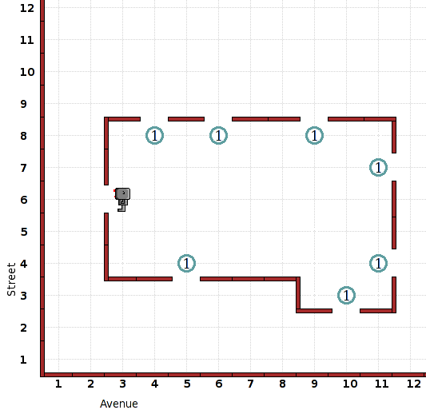

The task is to enter the house and
close all of the windows (by placing beepers in front of them),
because it is raining. When the windows are closed, Reeborg will
stand inside the house looking out the (open) front door, waiting for
the rain to stop. The shape of the house may vary.
